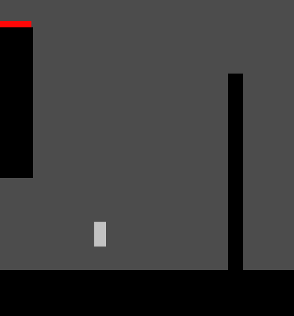
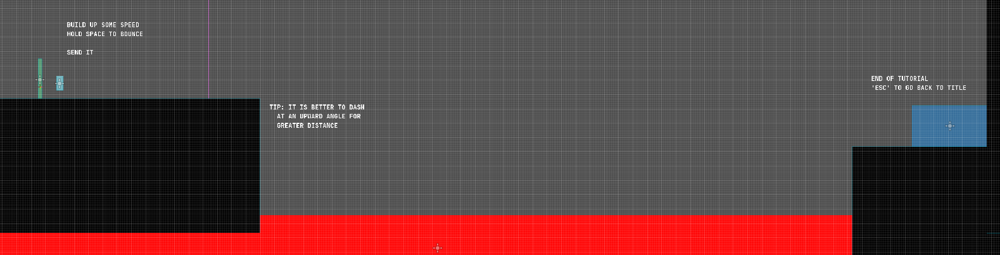
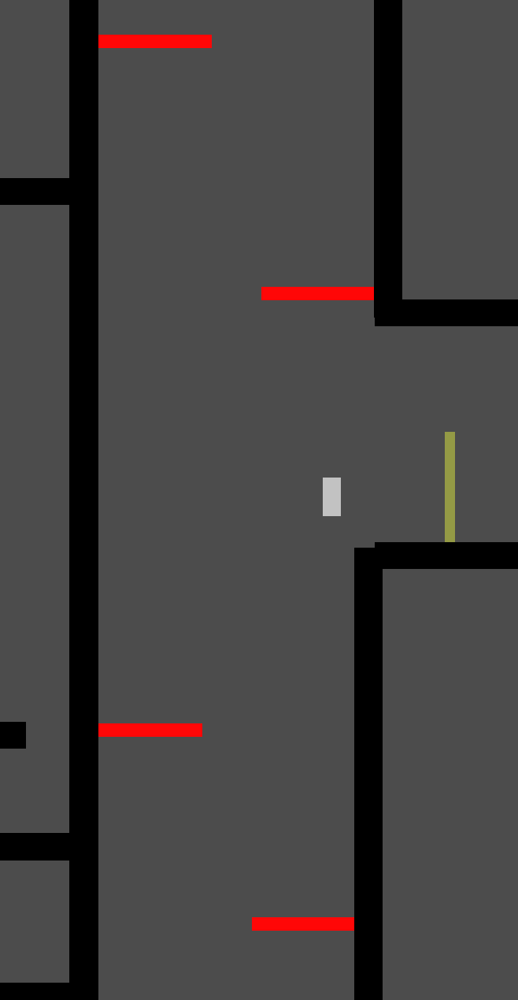

Dev Log 5: Playtesting Discussion
2/6/23
In this last week of the development of Project Movement, we did playtesting and accrued a bunch of useful feedback. Across two sessions and some external tests, our playtesters raised questions and suggested improvements for some of the fundamental design and movement features of the game. Some players enjoyed the movement mechanics, while others were less fond of it. There was a lot of overlap between the feedback given on days 1 and two, so while this dev log is split the days into sections, both will mention the other day of testing.
Playtesting 1
Double Jumping
By far the most common point of feedback we received from playtesters during this session was that it was confusing to have two different buttons for “jumping,” but not having both work at all times. The reason behind this was that we had the space bar to perform jumps from the ground, but also the ‘W’ key to perform jumps while in the air. Since players were used to using the same button to “double jump” if such a mechanic exists, it was hard to use two different buttons for what they felt like should be the same mechanic. I tried to differentiate by calling the ability “air jump,” but players’ previous notions of double jumping were still too strong.
Wall Jumping
This was something that was frustrating for some testers but not an issue for others. It did not help that the original instruction text in the tutorial wasn’t very descriptive. To get a bit into the implementation of our movement, our scripts use Godot’s is_on_wall built-in method to test if the player is contacting a wall and should be able to wall jump. However, this only returns true if the player’s KinematicBody2D has collided with a wall in the last physics step. There may be two issues here: first, the player actually reflects from the wall with a miniscule amount of horizontal velocity after colliding, so if the player does not hold the direction towards the wall they want to jump off, they can’t wall jump; Second, other platformers give the player greater air control and have much faster air deceleration. This means that players are conditioned by other platformer games to hold away from walls when they intend to perform a wall jump. In our game, there is a small amount of air control, which again leads to the player character no longer colliding with the wall and not being able to jump off of it.
On day 2, we received feedback that some visual or audio indication of being “on the wall” and able to wall jump would be helpful. This sounds like a good
Indication/Feedback to the Player
Playtesters also mentioned that the visual indication and feedback from the game was lacking. For one example, players were confused on when the dash ability regenerated. In multiple instances, since testers were using it near walls and with the wall jump, they assumed that the dash regenerated upon touching the wall, and were subsequently confused when the dash didn’t come back. The dash actually refreshes 1 second after use, but nothing on the HUD references this. Instead, the HUD just says if the ability is available or not. Testers on day 2 also noted this, and suggested some sort of cooldown bar.
Players in both the first and second day also thought that the checkpoints should give some feedback to when they activate, since it was unclear in the current state of the game.
Climbing Walls

There is a section in the tutorial including a tall wall opposite another wall, where the player is intended to wall jump and dash between them to gain enough height to get over them. This is not very easy, and was intended to be a more difficult part as the last thing in the tutorial. Players who were not as used to the movement as we are found this hard to do the intended way. But some players discovered that it was easier to just climb up a single wall. By wall jumping and dashing back towards the wall you jumped from, it is possible to vertically ascend a single wall. This was a good deal easier than going between walls since it required less movements of the mouse and less complicated presses of the movement keys.
Changes
There weren’t many between the first and second playtests. One of the changes we did make to the movement was to add the ability to click to dash. We thought that this suggestion from one of our playtesters made a lot of sense since the player was already required to position the mouse in order to direct their dash. Otherwise, a few visual bugs in the UI were fixed and a level was added. Also, a few pieces of instruction text were changed in the tutorial, a speed check was added to the tutorial, and the tall barrier was made easier to pass by moving it closer to the wall that was meant for players to jump between. 
Playtesting 2
Difficulty
Different playtesters had different perceptions on the difficulty level of our game. In part this was probably due to the fact that they did not know what was possible with our movement system. It also could have been because they were not used to the inertial movement of the game. Some players found it difficult to get used to this, and found even the first jumps of the tutorial to be difficult, stating that the platforms were too small and hard to land on.
Other players who were more experienced with platformers found our levels easy. There was a large difference between the times it took players with different levels of previous experience to complete each level. They even suggested adding secrets or “easter eggs” into the game in extra challenging locations.
Double Jump vs. Dash
We heard that the tutorial level was possible without using the dash at all, only the double jump. We also may have heard similar feedback during the first playtesting session. Essentially, since the dash and double jump are so similar, they don’t feel meaningfully different. It makes sense since the dash can be used in a similar way to the double jump for a similar effect, though the reverse is not true. We may consider removing the double jump and instead giving the player two dashes, but that is something warranting further exploration alongside the other movement changes that will be discussed below in the “Next Steps” section.
Aesthetic
Along with perhaps one person on day 1, we received feedback from testers on day 2 that they liked the minimal look of the game and thought that it gave the game a sense of simplicity and mechanical challenge. Other testers on day 2 felt that it was too lacking, even something like a stick figure or a different background would be a large improvement.
External Playtesting
External playtesting was carried out individually by some team members. Results and feedback from that to be available here: External Tests.
Level Design Challenges
Now that other people have played our game, we have learned that developing levels for a platformer is a tricky task. First, as developers we are going to be more familiar with the movement and likely more skilled with it. This makes it hard to gauge the true difficulty of a level.
Our goal with the game is to create levels that encourage skillful use of the whole repertoire of abilities that the player has in order to move through levels quickly. However we saw with the level added for the second playtesting session that this would involve specific and focused design. For example, the end section of the new level was originally just a tall corridor with flat walls. Since we knew that players figured out they could ascend walls by wall jumping and dashing to the same wall, we added obstacles in order to force players to jump between walls and make the section more difficult.
Since our physics allows players to move more freely than in other games, there are also other considerations to be made when designing levels. Since players can climb walls vertically, or even fly forever by using the dash, we are going to have to be careful with how we build levels because it might be too easy for players to break out of the level or play in a way that relies solely on only one way of moving.
Tutorial Level
One specific thing is that we made a tutorial level for our playtests. Having this helped some players along, but it wasn’t helpful for all players. Some testers on day 2 found it too difficult. Others thought that the ordering in which we introduced concepts and movement options to the player was nonoptimal, and it would be better to show something like the dash earlier on, for example. Other testers struggled with the instructions. In particular, the first day of testing had very vague instructions for how exactly to perform a wall jump. Some testers “got it” and felt it was intuitive, while others were frustrated by it. From the playtesting, we learned that having the tutorial be extremely clear is very important.
Timeline
Playtesters mostly gave feedback that the game was fun and the movement felt decent as it was. We believe that eliminating the few points of frustration expressed by the testers should leave the movement mechanics of the game in a good position.
Since we also have implemented other basic platformer features, like hazards, checkpoints, restarts, and a stopwatch/timer, we are perhaps ready to add polish to the game.
Next Steps
Jumping and Bunny HoppingAs mentioned before, players found jumping with two different keys to be very difficult to use. However, we implemented the air jump and regular jump abilities in this way because we wanted to include something similar to the Source mechanic of “bunny hopping.” By timing their grounded jump accurately, we wanted to make it possible for players to gain additional speed. We believed this mechanic would add an extra layer of skill to the movement. Since the player would need to time their jump, if the double jump and regular jump were on the same key, I found that it was hard to time a jump if the double jump was still available because then the double jump would just get used up and the player wouldn’t gain any speed. Then it would be unexpected to not have the double jump later because it was hard to tell if you actually performed a bunny hop or just used up your double jump.
Since the “bhop” speed bonus is superseded by the speed afforded by the dash anyway, we are next considering how to change the player’s kinematics. I can see two options present, either remove the double jump and keep the bunny hopping, or remove the bunny hopping bonus, and simply allow the player to “bounce” as they wish by holding a different key (perhaps ‘SHIFT’ now that it is no longer used for the dash).
Wall Jumping
We believe it may be possible to make wall jumps more intuitive by adding a short RayCast2D to check if the player is close to a wall, and if they are within some small distance, allow the player to still do a wall jump.
Polish
In the following weeks of development, we should aim to focus on adding polish. This would be stuff like adding sound effects, some visual effects, and some art. The current minimal solid color state of the game is not very refined, and doesn’t look that great. We received feedback that it looked like it had “some charm,” but also that it looked too simple and our game felt like a “physics simulator.” Perhaps by adding more art assets and sounds, our software will feel more like a game. Sound effects were also something that players mentioned would be helpful to give the player some sort of feedback about their actions, so that is definitely something we will look into.
Currently, visuals are in development and we don’t actually have a clear idea of what we want the art of the game to look like. This is definitely something to discuss further and come up with a decision on. Players expressed that visual effects would also be nice, so we may want to discuss how we want to combine art and visuals in future development.